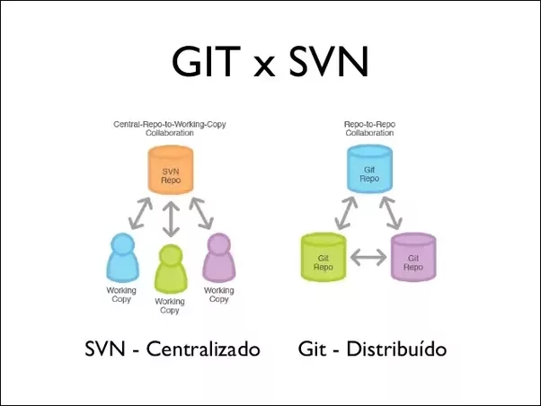

Colaboradores
![[Allek Correia]](Allek.jpg)
![[Anderson Muriell]](Anderson.jpg)
![[Silvio Junior]](Silvio.jpg)
É um sistema de controle de versão open-source que gerencia arquivos e diretórios controlando as alterações realizadas ao longo do tempo. Além disso, é possível recuperar versões anteriores ou visualizar o histórico de alterações. Permite que você recupere versões antigas de seus dados, ou que examine o histórico de suas alterações. É um sistema de caráter geral que pode ser usado para gerenciar quaisquer conjuntos de arquivos (código-fonte, arquivos de edição de vídeo, etc.).
Se não houver um sistema de versão, imagine o caos entre duas pessoas abrindo o mesmo arquivo ao mesmo tempo. Uma das aplicações do git é justamente essa, permitir que um arquivo possa ser editado ao mesmo tempo por pessoas diferentes. Por mais complexo que isso seja, ele tenta manter tudo em ordem para evitar problemas para nós desenvolvedores.
O Git é um sistema de controle de versão, projetado basicamente para facilitar a vida de quem quer executar projetos em equipe, permitindo que duas ou mais pessoas trabalhem juntas. Mas também é utilizado por quem trabalha sozinho, devido a possibilidade de ‘controlar’ as versões do projeto.
Um sistema de controle de versão faz o papel de “juntar” as partes do projeto, de modo que, cada membro da equipe faça uma parte, e, utilizando este sistema seja possível juntar tudo no final.
É claro que ele é bem mais complexo, mas o conceito inicial é este, cada membro da equipe tem sua pasta do Site, trabalha durante o dia, e no final o Git junta tudo em uma pasta no servidor ‘Principal’, evitando que arquivos sejam sobrescritos e também armazenando históricos e logs individuais de cada membro da equipe.
Outra vantagem do git é a possibilidade de controlar o projeto de forma descentralizada, ou seja, sem a exigência de um servidor ‘Mestre’.
O git permite a criação de várias ‘Áreas de trabalhos’, ou seja, podemos criar para o mesmo projeto, uma pasta para o site em desenvolvimento, outra para testes e outra oficial, onde fica o projeto em produção.Com isto, você pode testar seu site bem antes de colocar em produção, e não corre o risco de alguma funcionalidade que não esteja concluída aparecer para seus visitantes.Como o git armazena histórico de cada alteração, com o projeto em execução, mesmo que seja necessário efetuar alterações, é possível desfazê-las com um único comando, como se fosse um “CTRL+Z”, caso algo dê errado.
O Git traz muitas vantagens na sua utilização, mas posso afirmar que o trabalho em equipe fica muito mais seguro e divertido com ele. Separamos nossa equipe em programadores e desenvolvedores front-end, com isto, conseguimos que, durante o mesmo periodo, pessoas diferentes criem a programação e o visual do site. No final do dia o git faz todo o trabalho de juntar os arquivos, mostrar se existe algum conflito e em seguida efetuar o deploy.
Pasta que contém os projetos que estão em desenvolvimento. Todas as atualizações efetuadas dia-a-dia são armazenadas nesta pasta.
Pasta que contém “linhas de desenvolvimento” de tal projeto, que entre elas pode haver poucas diferenças, porém uma independe da outra. Quando o projeto está pronto para ser liberado como uma versão estável, a pasta trunk é copiada para a pasta branch e dado um nome de versão. Este branch é congelado, não sofrendo mais alterações, apenas correções. Os testes são efetuados
Quando os testes efetuados na branch estão completos, a versão que se encontra na branch é copiada para a pasta tags, criando a “release”. A pasta tag é empacotada e enviada para o cliente. Qualquer modificação em branch, deve ser copiada para a pasta de tags, após todos os testes. O SVN considera tag apenas uma variação de um branch, e na prática é exatamente como um branch, apenas uma cópia da ramificação atual da árvore.

Segundo alguns artigos online afirmam que Git não é melhor que Subversion, mas também não seria pior que ele. Ele é apenas diferente. E ele enumera os seguintes argumentos a seguir:
A chave para a diferença é apenas descentralizada. Imagine que você está desenvolvendo na estrada, e claro está programando em seu notebook e você claramente quer ter controle sobre o seu código fonte para que você possa verificar algo feito há três horas atrás.
Com o Subversion, isso seria um problema. O SVN repositório poderia está em uma localização inacessível (na sua empresa, e você está sem internet no momento). Então, se você deseja a cópia desse código, você literalmente tem que copiar e colar ele.
O que não ocorre com o Git, Sua cópia local nada mais é que um repositório, e você está hábil e possui total controle de seu código. E logo que você entrar em conexão novamente, tudo será feito o update.
Com o Git, você literalmente pode fazer qualquer coisa offline, porque cada u possui seu próprio repositório. Fazer ramos e mesclar entre os ramos é extremamente simples. Contudo, nem tudo são flores para o Git e vamos verificar algumas desvantagens: É mais difícil de aprender, devido ao fato do Git possuir mais conceitos e mais comandos As revisões não tem um número de versão como as subversões Alguns comandos do Git são enigmáticos, e as mensagens de erro não são amigáveis ao usuário Falta uma boa interface gráfica comparado ao TortoiseSVN Uma das mais notáveis diferenças quando um usuário troca de plataforma para o Git é a velocidade. Devido ao fato que todo o repositório é alocado na própria máquina do usuário.